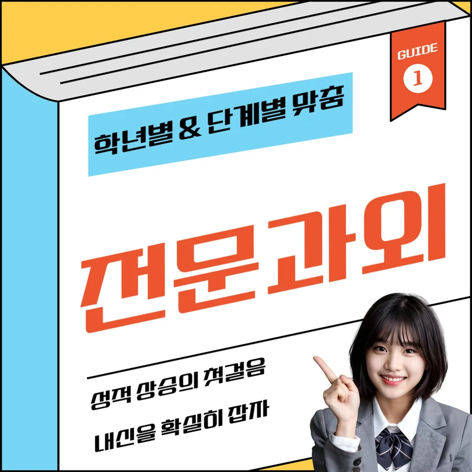

PageType : SUBJECT
URL : /경기도과외/용인시과외/처인구과외/삼가동과외/삼가동영어과외/
지역 교육환경이 영어 학습에 미치는 영향
삼가동영어과외를 찾는 학생들은 같은 수업 시간을 쓰더라도 주변 환경에 따라 체감 학습량이 달라지는 편입니다. 학교 수업 속도, 방과후 운영 방식, 지역에서 공유되는 학습 루틴이 서로 달라서 영어 학습의 시작부터 흥미가 갈릴 수 있습니다. 특히 삼가동영어과외에서 강조하는 것은 ‘어디서 어떻게 공부했는지’보다 ‘지금 단계에서 어떤 자극과 기록이 쌓이고 있는지’입니다. 듣기에서 놓친 표현을 어휘로 연결해 보는지, 읽기 중 막히는 구문이 왜 생기는지 기록하는지에 따라 영어 실력의 방향이 달라집니다.
동네 학습 분위기에서는 시험 대비가 빠르게 앞당겨지기도 합니다. 이때 학생은 문법을 다시 외우기보다, 이미 본 문제 속에서 어떤 단서로 답을 고르는지에 집중하게 됩니다. 삼가동영어과외 수업에서는 학교에서 돌아오는 자료가 무엇인지에 맞춰 학습 시간을 재배치하고, 내신 범위에 포함된 표현이 독해에서 자연스럽게 등장하도록 반복 순서를 조정합니다. 결국 지역의 교육 환경은 공부량 그 자체보다 학습의 흐름을 만드는 방식에 영향을 줍니다.
학교마다 달라지는 영어 평가 방식
학교별 영어 평가 방식은 생각보다 세분화되어 있습니다. 내신에서 문항이 어떻게 출제되는지, 수행평가가 어떤 형식으로 운영되는지, 그리고 학교가 문장 이해를 얼마나 점검하는지가 학생의 공부 습관을 바꿉니다. 삼가동영어과외에서는 ‘정답’보다 ‘평가가 보는 지점’을 먼저 파악합니다. 예를 들어 듣기에서 정확도를 요구하는 학교는 시험 기간에 집중력이 끊기지 않도록 짧은 듣기-확인 루틴을 만들고, 독해 중심 학교는 읽는 동안 문장 구조가 무너질 때를 대비해 구문 단서 찾기를 반복합니다.
수행평가가 포함된 시기에는 학교가 원하는 결과물의 완성도가 중요해집니다. 이때 학생은 학습 내용을 한 번에 정리하려다 오히려 부담을 키우곤 합니다. 삼가동영어과외에서는 수행평가 준비가 문법 설명을 늘리는 방향으로 가지 않도록, 수업 중 만든 문장 이해 과정을 실제 제출 형식에 맞춰 재배치합니다. 학생이 영어를 ‘배운 것’이 아니라 ‘쓸 수 있는 것’으로 느끼게 되는 순간이 생기면서 영어 학습의 태도가 달라집니다.
학생들이 영어에서 어려움을 느끼는 시점
대부분의 학생은 영어에서 같은 패턴으로 흔들립니다. 처음에는 모르는 단어가 보여도 문장 전체를 따라가려다, 어느 순간부터는 독해가 멈추는 경험을 합니다. 그 시점에 어휘는 그대로인데 ‘문장 이해의 연결’이 끊기면서 공포가 생깁니다. 삼가동영어과외에서는 보통 이 흔들림을 초기에 감지하려고 합니다. 듣기에서 자주 놓치는 연결표현이 읽기에서도 반복되는지, 문법을 맞히는 문제와 실제 구문 해석이 어긋나는 순간이 같은지 점검합니다.
또 다른 어려움은 학기 중 중간쯤에 발생합니다. 시험이 멀어 보일 때 학생은 복습을 미루고, 결과적으로 오답이 누적됩니다. 삼가동영어과외에서는 오답의 형태가 바뀌는 걸 관찰합니다. 처음에는 실수형 오답이 나오다가 시간이 지나면 ‘원인 불명’처럼 보이는 오답이 늘어납니다. 이때 필요한 것은 해설을 더 많이 보는 일이 아니라, 영어 학습에서 무엇이 누적되고 무엇이 비어 있는지 확인하는 과정입니다.
학년 변화에 따른 영어 학습의 차이
학년이 올라가면 교과서 흐름 자체가 아니라 요구되는 학습 태도가 달라집니다. 초반에는 문장 단위로 이해해도 되지만, 시간이 지나면 문단 단위의 독해가 필요해지면서 구문과 어휘가 더 촘촘히 연결되어야 합니다. 삼가동영어과외에서는 학년 변화가 오기 전부터 학습 부담의 성격을 나눠 봅니다. 예컨대 읽기 속도가 느려지는 학생은 문법 문제에서 실수해도 실제 원인은 문장 구조를 놓친 경우가 많습니다. 그래서 영어 학습을 문법, 어휘, 독해로 분리해 다루기보다 한 흐름으로 이어지게 구성합니다.
학년이 바뀐 뒤에는 공부습관도 수정됩니다. 기존에는 문제를 많이 푸는 방식이 먹혔다면, 이제는 질문의 종류가 달라져 “왜 틀렸는지”를 설명하는 능력이 필요해집니다. 삼가동영어과외에서는 학생이 자기주도학습으로 전환될 수 있도록, 수업이 끝난 뒤 스스로 점검할 체크 항목을 줄여 줍니다. 오답을 복습으로 바꾸는 순간이 반복되면서 영어 실력의 상승 곡선이 만들어집니다.
내신과 수행평가를 함께 준비하는 방법
내신과 수행평가가 동시에 시작되면 학생은 시간 배분을 자주 잃습니다. 삼가동영어과외에서는 시험 범위를 먼저 확인하고, 그 범위 안에서 듣기-읽기-문장 이해가 어떻게 연결되는지 정리합니다. 내신 문제는 답만 보면 끝나지만, 수행평가는 표현과 흐름이 중요해지기 때문에 독해에서 얻은 이해를 글이나 말의 형태로 옮기는 과정이 필요합니다. 그래서 수업에서는 구문 이해를 바탕으로 문장으로 재구성하는 시간을 끼워 넣습니다.
학교 과제는 ‘마감’ 중심으로 움직이지만, 영어 학습은 ‘축적’ 중심이어야 합니다. 삼가동영어과외에서는 수행평가 준비를 오답 관리와 함께 묶습니다. 제출 전에 점검할 항목을 오답 노트의 패턴과 연결해 두면, 학생은 같은 실수를 줄이기 위해 복습을 자연스럽게 하게 됩니다. 그 결과 영어 학습이 막판에만 몰리지 않고 꾸준히 이어져 내신 대비도 한 방향으로 정리됩니다.
꾸준한 학습 습관이 만드는 영어 실력
영어 실력은 단기간의 집중보다 일정한 리듬으로 쌓일 때 안정적으로 자랍니다. 삼가동영어과외에서 확인되는 공통점은 학생이 “공부를 시작하는 방식”을 갖추게 된다는 것입니다. 듣기와 읽기는 매일 조금씩 다루더라도, 복습과 오답 기록이 함께 가지 않으면 의미가 줄어듭니다. 그래서 학습 계획은 분량이 아니라 반복되는 지점을 중심으로 설계합니다. 어휘는 한 번 외우고 끝내지 않고, 문장 이해 안에서 계속 다시 만나게 합니다.
시간을 효율적으로 쓰는 방법도 습관으로 결정됩니다. 시험 기간이 가까워지면 학생은 속도를 올리려 하지만, 이때 독해가 흔들리는 경우가 많습니다. 삼가동영어과외에서는 시험 패턴에 맞춰 “시간을 줄이는 대신 확인을 늘리는 구간”을 정해 둡니다. 예를 들어 문단 시작에서 주제 문장을 잡는 연습을 먼저 하고, 그 뒤에 문장 해석을 보정합니다. 반복이 쌓이면서 학생은 영어를 두려워하지 않고 스스로 공부습관을 유지하게 됩니다.
복습과 오답 관리가 중요한 이유
오답은 실력이 낮아서 생기는 것처럼 보이지만, 실제로는 학습 과정의 빈틈이 드러난 신호인 경우가 많습니다. 삼가동영어과외에서는 오답을 ‘틀린 문제’로만 보지 않고 원인이 무엇인지로 분류합니다. 어휘를 모르는 문제인지, 구문을 잘못 해석한 문제인지, 듣기에서 결정적인 단서를 놓친 문제인지가 나뉘어야 복습이 의미를 갖습니다. 이렇게 정리된 오답은 다음 학습에서 바로 연결되며, 복습이 단순 재풀이가 아니라 다음 단계의 이해로 이어집니다.
학생이 복습을 미루기 시작하는 순간에는 공통점이 있습니다. 기억이 약해진 것을 느끼면서도 ‘다시 배우는 시간’이 필요하다고 생각해 버립니다. 삼가동영어과외에서는 이 간격을 줄이기 위해, 오답 복습을 짧게 반복하되 기록을 남기게 합니다. 복습과 오답 정리가 이어지면 영어 학습에서 자신감이 형성됩니다. 자신감은 답을 맞히는 감각에서 끝나지 않고, 다음 문제를 보기 전에 스스로 체크할 기준이 생길 때 확실해집니다.
영어 학습에서 확인해야 할 핵심 요소
삼가동영어과외에서 학습 과정을 점검할 때는 몇 가지 핵심 요소가 반복해서 등장합니다. 첫째는 학교 시험 범위와 학습 계획이 연결되는지입니다. 둘째는 독해, 문법, 어휘가 분리되지 않고 함께 작동하는지입니다. 셋째는 오답의 원인 분석이 누적되는지입니다. 넷째는 정기적인 복습으로 장기 기억이 유지되는지입니다. 이런 요소가 자리를 잡으면 학생은 자기주도학습으로 넘어가도 흔들림이 줄어듭니다.
듣기와 읽기의 균형도 놓치기 어렵습니다. 듣기만 계속하면 문장 구조가 약해지고, 읽기만 늘리면 표현 감각이 둔해질 수 있습니다. 구문을 이해한 뒤에 문장 단위로 되짚는 과정이 필요하고, 어휘는 누적되는 과정 안에서 계속 등장해야 합니다. 삼가동영어과외에서는 영어를 꾸준히 공부하는 습관이 만들어내는 변화를 수업 중 관찰합니다. 시험 기간 학습 패턴이 바뀌더라도, 평소에 쌓인 학습 기록이 방향을 잡아 주기 때문입니다.
자주 묻는 질문
영어 학습은 언제부터 체계적으로 준비하는 것이 좋을까요?
학년이 올라가기 전에 학습 부담이 바뀌는 흐름을 먼저 점검하는 것이 유리합니다. 삼가동영어과외에서는 독해에서 멈추는 지점, 어휘 누적이 끊기는 시점, 듣기와 읽기의 균형이 흔들리는 순간을 기준으로 체계화 시점을 잡습니다. 결국 “시기”보다 현재 학생의 학습 패턴이 어떤 빈틈을 만들고 있는지부터 확인하는 방식이 효과적입니다.
학교 내신과 모의고사는 어떻게 함께 준비해야 하나요?
내신은 학교가 요구하는 평가 지점을 따라가야 하고, 모의고사는 독해 흐름과 시간 운용이 함께 필요합니다. 삼가동영어과외에서는 시험을 서로 분리하지 않고, 내신에서 만든 문장 이해와 구문 감각이 모의고사 독해에서도 그대로 작동하게 연결합니다. 오답을 복습과 연결해 “다음 시험에서 같은 실수 방지”로 바꾸는 연습이 핵심입니다.
영어 독해 실력은 어떤 과정으로 향상될 수 있나요?
독해는 한 번에 늘리기보다 문장 이해가 단단해지는 흐름에서 성장합니다. 삼가동영어과외에서는 단어를 아는 것에서 끝내지 않고, 구문 단서를 찾고 문장 구조를 다시 확인하는 과정을 반복합니다. 시간이 지나면 읽기 속도보다 정확도가 먼저 안정되고, 그 안정이 다시 속도로 이어지는 순서가 만들어집니다.
어휘와 문법은 어떤 순서로 학습하는 것이 효과적인가요?
어휘는 누적될수록 효과가 커지고, 문법은 실제 문장 안에서 적용될 때 이해가 고정됩니다. 삼가동영어과외에서는 어휘를 단독 암기로 끝내지 않고 독해 문장 속에서 다시 만나게 하고, 문법은 문장 이해 과정에서 필요한 부분만 선택적으로 적용합니다. 그래서 어휘와 문법이 서로를 지탱하는 구조가 생깁니다.
공부 습관을 꾸준히 유지하려면 무엇이 중요할까요?
지속은 의지보다 기록과 복습의 리듬에서 만들어집니다. 삼가동영어과외에서는 오답 관리가 복습으로 연결되고, 복습이 다시 새로운 학습으로 이어지는 루프를 만들어 줍니다. 짧더라도 매일 확인할 항목을 정하면 시험 기간에도 학습 패턴이 급격히 무너지지 않고 자기주도학습으로 자연스럽게 이어집니다.
